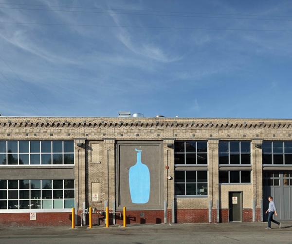

콜시츠키와 최초의 블루보틀
전해져 내려오는 이야기는 이렇게 시작됩니다.
1600년대 말, 중부 및 동부 유럽의 대부분을 점령하고 있던 터키군은 1683년 비엔나에 도착했습니다. 군에 포위되어 절망적인 상황에 놓인 비엔나 사람들은 터키 군의 포위망을 뚫고 인근에 주둔해 있는 폴란드 군대에게 자신들의 메시지를 전해줄 특사가 필요했습니다. 이때, 터키어와 아랍어에 능통한 프란츠 조지 콜시츠키(Franz George Kolshitsky)가 터키군으로 위장하여 이 일을 수행하기로 합니다. 위험천만한 위기의 순간을 여러 번 넘긴 후 마침내 콜시츠키는 모든 임무를 용맹하게 완수해내고, 곧 다가올 폴란드의 지원 소식을 비엔나에 다시 전하게 됩니다.
그 해 9월 13일, 터키군은 결국 가지고 왔던 모든 것을 남겨둔 채 격퇴되었고, 그중에는 낙타 먹이로 보이는 이상한 콩이 잔뜩 들어있는 천 꾸러미도 있었습니다. 아랍 국가에서 여러 해 살았던 콜시츠키는 이 콩들이 바로 커피라는 것을 알고 있었습니다. 그는 비엔나 시장에게서 받은 상금으로 커피를 사고, 중부 유럽 최초의 커피 하우스(The Blue Bottle)를 열어 비엔나에 커피를 소개했습니다.